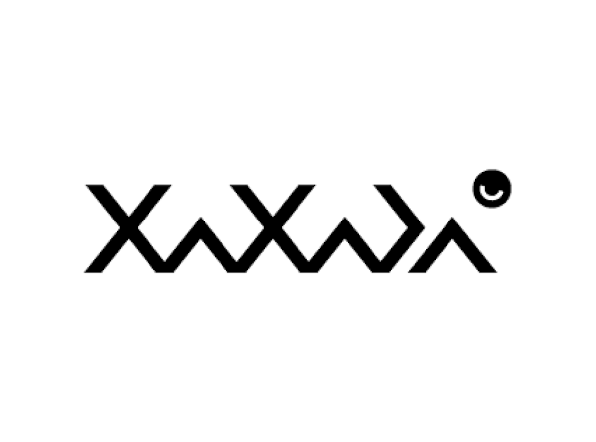
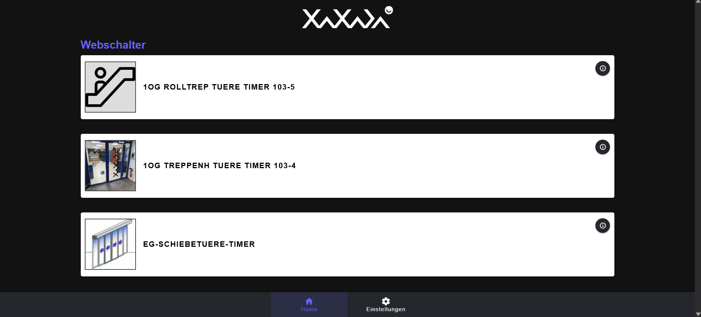

angular js, vue.js, php, c++, debian, rasbperry pi

xaxada professional ist eine umfassende Smart-Home- und Gebäudeautomationslösung - von intelligenter Zutrittskontrolle bis hin zur effizienten Steuerung von Licht, Strom, Heizung, Lüftung, Beschattung sowie industrieller Überwachung.
xaxada verbindet alle Elemente eines modernen Gebäudes - von Heizung, Lüftung und Klimatisierung (HLK-Steuerung) über Zutrittskontrolle, Licht und Beschattung bis hin zur Überwachung - in einer einzigen, zentralen und webbasierten grafischen Benutzeroberfläche. Unterschiedlichste Technologien werden nahtlos integriert und lassen sich intuitiv steuern. Dabei steht xaxada für Benutzerfreundlichkeit, maximale Flexibilität und Kosteneffizienz. Anpassungen und Wartung sind auch ohne spezielle Softwarekenntnisse möglich, was xaxada zur idealen Lösung für gewerbliche wie auch private Anwender macht. Dank der durchgängigen Nutzung des international anerkannten TCP/IP-Protokolls für Sensoren und Aktoren garantiert xaxada nicht nur Kompatibilität und Zukunftssicherheit, sondern auch eine hohe Zuverlässigkeit. So bietet xaxada eine sichere, weltweit einsetzbare Lösung für intelligente Gebäudesteuerung.
xaxada pro wird als Cluster-Konfiguration mit zwei Rasbperry's ausgeliefert und stellt so eine grosse absturzsicherheit dar. Das Hauptsystem hat eine Fixe IP und diese IP wird beim Absturz des Hauptsystems vom Nebensystem übernommen. Die Konfiguration von Verbrauchern und Webschalter kann, mit entsprechender Authentifizierung, direkt auf dem integrierten Webserver vom Apache konfiguriert werden. Die Konfigurationen werden immer mit dem jeweilgen Nebensystem und dem Internationalen Server synchronisiert und bietet so eine einfache Wiederherstellung. Ausserdem können Verbraucher oder Sensoren, die über TCP/IP, MQTT oder andere einbindungs Möglichkeiten verfügen, automatisch und simpel über eine Suchfunktion ins System integriert werden. Anschliessend werden Logische Konfigurationen erstellt, die verschiedene Verbruacher an oder aus Schalten. So kann z.B. eine Konfiguration vorgenommen werden, die Sicherstellt, das bei einer gewissen Windgeschwindigkeit die Storen hochgefahren werden. Zusätzlich können auch noch Webschalter erstellt die unterschiedliche Verbraucher schalten.
Für die Betätigung von Webschaltern wird ein sogenannter Sharelink erstellt. Die Idee des Sharelinks ist, dass man diesen an alle versenden kann, die z.B gewisse Schalter betätigen dürfen oder müssen. So kann man gezielt Zutrittskontrollen vornehmen. Diese Sharelinks können auch Zeitlich begrenzt sein und so wieder ungültig werden. Dieser Sharelink wurde mit vue.js erstellt. Er kann lokal auf dem Rasbperry oder auf dem Internationalen Server von xaxada benutzt werden.
